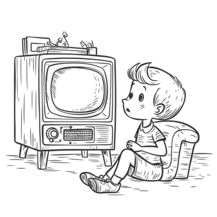

A movie that you could watch next is...
Get inspired from my personal IMDb ratings.

Coraline
My movie ratings at a glance
Rated 2331 movies and series up to October 4, 2026.
A movie collection worth sharing
I enjoy sharing almost everything, and movies are easily one of the best things to share with someone. They're a great vessel for conveying meaning, exploring ideas, and, in general, telling stories. Sometimes you just want to recommend something you've watched; other times, you want to find that one title that fits the evening without having to scroll through an endless catalogue.
So, whenever someone asks me which movie I'd suggest, I'll send them this page.
A small window into my watch history
The tool suggests titles from my currently watched list, as exported on October 4, 2026, which sits at around 2300 movies and series. Anything I've rated with a 10 is something I genuinely suggest watching, not reccomend per se as I can't guarantee joyable viewing. And yes, I do revalue ratings when I rewatch something. A rating isn't necessarily a permanent scientific measurement of a movie; sometimes a second, third, or tenth viewing changes how a story lands.
Coraline, for example, is a must-watch stop-motion film, and I can't recommend it enough. That's why it is the default suggestion when the page loads. It seemed appropriate.
Why not just use my IMDb?
Yes, my IMDb profile is cute and all, but very few people are going to sit through it and explore a collection of more than two thousand titles just to find something they might want to watch. There's also something slightly more enjoyable about having a small tool make the first suggestion for you.
That's essentially what this page is: a little tool for a little problem. It's fun, playful, informative, and maybe kind of useful when you're one evening out of ideas about what to watch next. You click or tap around, get a title, and decide whether it catches your attention.
Could there be more filters? Probably. You could filter by more genres (and not just my top 5 ones), year, runtime, language, country, movie or series, or some wonderfully specific combination of all of them. But come on, that's too much trouble already. Part of the fun here is letting the list do a little of the deciding for you.
A rating is a moving target
There's also a small distinction worth making about the ratings. A 10 here doesn't mean I believe a movie is objectively perfect. There is no useful universal scale for that, and I'm not particularly interested in pretending there is. It's simply the rating I've given that movie at the time, based on how it affected me, what I found in it, and how much I would want to return to it.
Rewatches can change that. Sometimes a movie gets better with time; sometimes I notice things I missed; sometimes nostalgia gets involved; sometimes I simply realise that my original rating was a bit generous. The list is therefore less of a fixed archive and more of a collection that keeps changing as I keep watching.
If you want the whole thing
For a more detailed approach to my watchlist, there's always the official thing on my IMDb profile. And in case I forget to update this page after three to six months, that is probably the safer place to look.
For now, have fun clicking and tapping around. Hopefully you'll stumble upon an interesting title worth exploring further. For real, anything I've rated with a 10 is something I'd gladly rewatch after some time, and those are the titles I simply suggest you watch.
Hopefully your time will be well spent, or invested. Enjoy.
How this came together
- Alex, what do you suggest for me to watch? Initial question by most once they get to know that you enjoy devouring movies and series. And because sending a link to my IMDb prodile doesn't do the trick, voila this little page.
- Started with my personal IMDb ratings and exported the data as the initial dataset. The exported CSV was then transformed into a pretty JSON with an online tool, as IMDb doesn't provide a free public API for retrieving your personal ratings.
- Cleaned and filtered the export with a short script, keeping movies and series while excluding individual episodes. Later on, I realised that IMDb could actually export a filtered list directly -.-
- Used the TMDB API through a small .mjs build script with ChatGPT, to match IDs and retrieve poster slugs and overviews. This means that some poster inconsistencies compared with IMDb are expected, as are occasional differences in titles. The data gets matched and fixed periodically.
- Kept the enrichment as a build step rather than having the page query TMDB for every title on every visit. This means the browser only needs to load one static JSON file, while the extra information is already prepared beforehand. Less work for the browser, fewer requests, and a simpler runtime.
- Added some graceful handling for incomplete data. Invalid records are filtered out during the build, while titles without poster artwork fall back to a local placeholder rather than leaving an awkward empty space.
- Added Genres as a second filter after the ratings filter. Multiple selected genres need to match simultaneously (AND), while ratings remain an OR filter. In other words, selecting several genres narrows the results to titles containing all of those genres, while selecting several ratings allows any of those ratings.
- Suggestions keep a session-based history, so changing the filters doesn't suddenly bring back titles that have already been suggested during the same session. Starting over clears that history and gives the list a clean slate.
- The filtering, suggestion logic and data handling all happen locally in the browser. Apart from loading poster artwork from TMDB's CDN, there's no runtime service involved. Once the JSON is loaded, the little machine is essentially running on its own.
- Used native HTML controls for the filters and actions rather than replacing them with custom UI components. The ratings chart also carries a textual description, so the information isn't communicated entirely through visual presentation.
- Built the ratings chart as inline SVG rather than relying on a charting library. It's a relatively small chart, so bringing an entire library along for the ride seemed unnecessary.
- The page is otherwise plain HTML, CSS and JavaScript, with no third-party runtime dependencies apart from TMDB's poster CDN. Informational exchange is so much easier when you don't introduce a flashy and complicated approach for the sake of having one.
- The whole thing initially appeared broken because I was opening the HTML file directly instead of serving it over localhost. Firefox quite reasonably wasn't having any of that. The more you know.
- Spent a day figuring out the layout and pixel-crafting the positioning of things, and voila. I tried getting a design mockup out of Claude and Gemini, but nuh, too cluttered and just looked off. Instead of trying to explain what is what and where, top to bottom, step by step, I covered the page's entire "design" myself. I know, it's childish to call it a design, but to me it does its job: clear, precise and not too confusing, hopefully.
- I like the saying Good design is invisible, and for something to be good in that sense, damn, it's hard. I like to keep things minimal, so hopefully it works. During the process I remembered some UI/UX fundamentals I'd read here and there, with contextual proximity being one of my favourites. It makes things just "click" without needing backdrops, cards, or whatever those background boxes are called, as if the interface were a physical space that needs to be tidied. And mobile for this kind of functionality requires total restructuring, for something I'm not set for. Anyway, this is probably not the page to expand on this subject.
- Sections are therefore identified primarily through visual proximity rather than background colouring, which to me is mostly visual noise. Things that belong together sit together; things that don't, don't. For example initially had small description for the Genres and Star rating filters, which didn't make sense afterwards. Like, the user intiutively should know what each filter does. After initial release, next day got feedback that on iPhones the appended symbol
\2197(↗) near the IMDb, was translated into an emoji... again, the more you know. So, on a revisit it got omitted entirely and indicative visual for external link was added elsewhere. - On next day visit after release, the CTA on mobile got more natural feeling (was overlapping footer elements before, besides being misaligned...), some typos got fixed, and small touches here and there.
- And apparently, a necessary disclaimer: this webpage uses TMDB and the TMDB APIs but is not endorsed, certified, or otherwise approved by TMDB. Posters provided by TMDB.